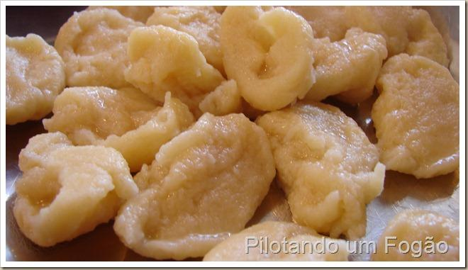

Out of ideas for lunch? Get some eggs and flour to prepare this very simple german dish
ingredients:
- 2 beaten eggs
- 1/2 tablespoon of salt
- 2 and 1/2 teacups of flour
- 3/4 teacup of water
Cooking Steps:
- Beat the eggs in a bowl; add the salt, flour and water to make a dough, constantly beating it
- Boil water in a pan, as if you were going to cook some pasta
- With a wet dessert spoon, get spoonful pieces of the dough and place them in the water
- When the little doughs doubles their size and start floating on the water's surface, drain the pan and serve the cless
- Add any sauces and condiments you like with it!
This dish can be combined with any sauces and condiments you want! The imagination is the limit :D
Return to recipes